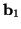
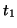
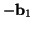

Using elementary stages as described above one can program in any particular movement of the cantilever across the surface including doing a 2D scan. This last option may be tedious though since many times the same pattern of line scans should be repeated. To avoid this, the 2D scan can be automated using another sub-box structure inside the <Elementary_Stages> box.
The basic idea is that a 2D scan can be simulated by repeating e.g. 4 elementary stages:

during a long time

during time
It is possible to position the scan sub-box arbitrarily between any stage sub-boxes inside the <Elementary_Stages> box as shown in the example in section 9.1. Therefore, it is possible to do some number of elementary stages, then a scan, then some other elementary stages, another scan, etc. The total length of this chain of stages is only limited by the maximum number of stages and scans allowed as given by the two parameters in the virtual_param.inc file (see section 5). Note that every scan is eventually constructed as a set of stages, so that the parameter N_of_stages_max can easily become too small and need to be increased, and the code recompiled.
To start a scan, place the keyword